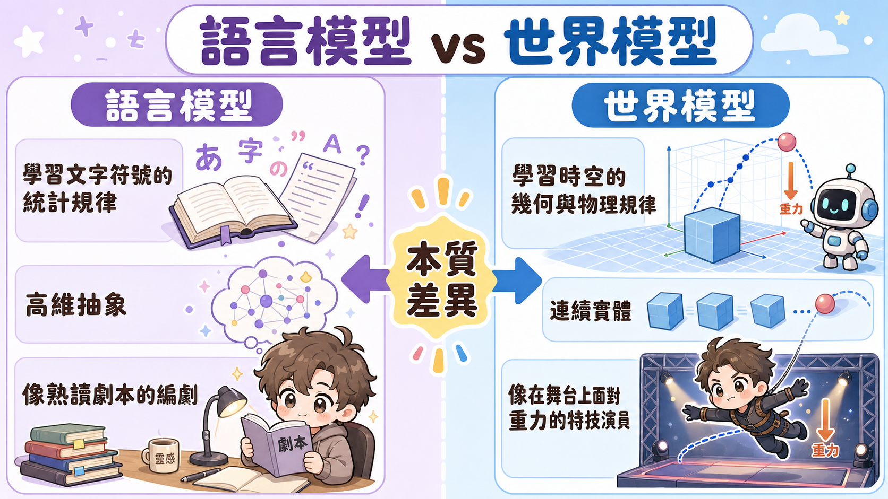
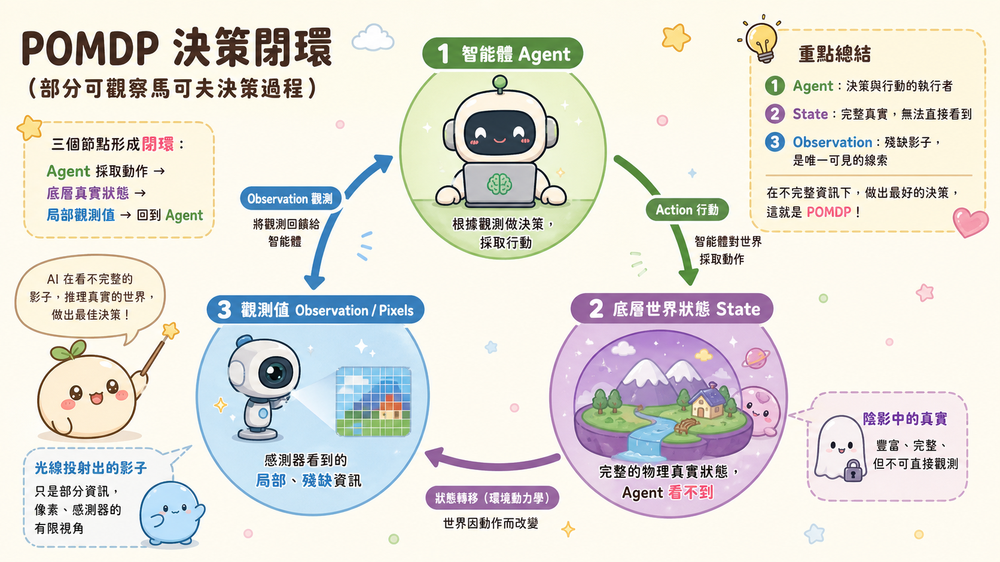
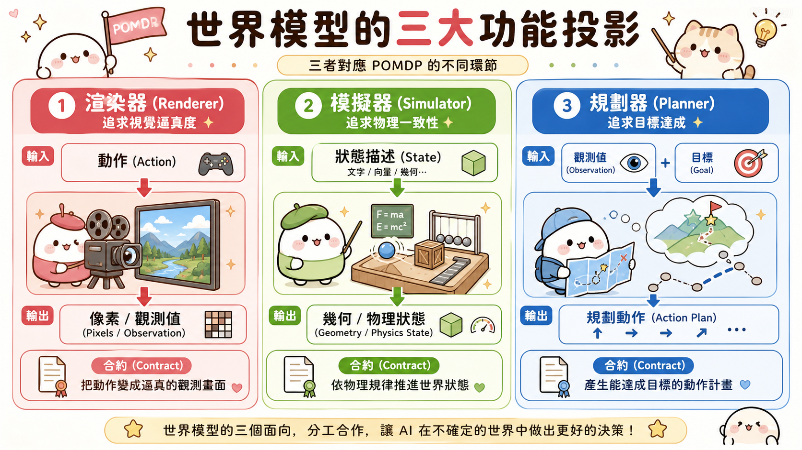
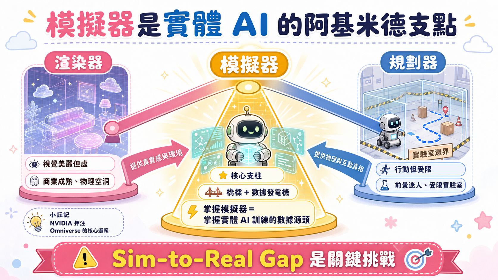
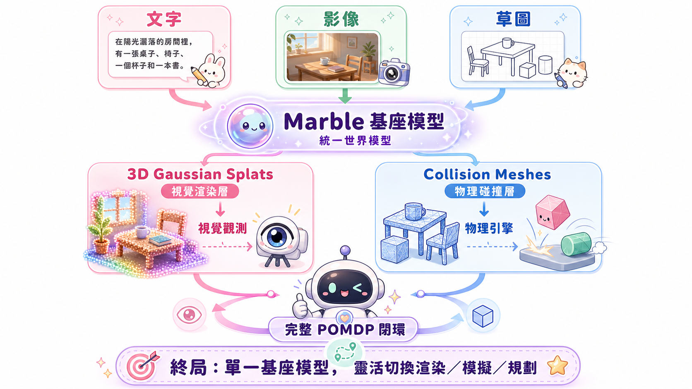

從文字到空間：世界模型的本質與定義澄清
「世界不是由文字組成的。」語言模型賦予機器概念與邏輯推理能力，但物理世界的運行基質完全不同。世界模型旨在學習時空的統計結構（光線投射、未觀測視角的幾何、物體受力後的物理行為）。目前電腦視覺、機器人、強化學習與生成式 AI 對「世界模型」的定義各執一詞，亟需精準的分類學。
大眾常將「會生成漂亮影片的 AI」等同於理解世界的「世界模型」。然而，語言模型是在離散的文字 token 間尋找統計規律，這是一種高維的符號抽象；但真實世界是連續的、具備物理幾何實體的。
世界模型所要解決的核心問題是：如何在沒有相機拍攝過的角度，預測光的反射？如何在物體受力時，預測其形變與運動軌跡？
如果把語言模型比喻為「熟讀劇本的編劇」，能編出合乎邏輯的故事；那麼世界模型就是「實際在舞台上行走的特技演員」，必須即時面對重力、摩擦力與光影的物理考驗。

分類學底層的閉環：POMDP 的控制論本質
釐清混亂的起點，在於強化學習中經典的「部分可觀察馬可夫決策過程 (POMDP)」循環：智能體 (Agent) 採取動作 (Action) 改變世界狀態 (State)，但 Agent 無法直接看到 State，只能接收到局部觀測值 (Observation)。此感知與動作的閉環，正是世界模型所有功能的源頭。
「狀態 (State)」與「觀測值 (Observation)」的區分，是控制論中極為嚴謹的邊界定義：
- State（狀態）：物理世界完整的底層真實 (Underlying Reality)，包含空間中所有物體的精確三維坐標、速度、質量、摩擦係數等。它是完整的，但對 Agent 而言是「不可直接觀測」的陰影。
- Observation（觀測值）：Agent 透過感測器（相機像素、雷達點雲、網膜光子）所獲得的「局部投影與殘缺視角」。
這個互動迴圈構成世界模型所有功能的底層框架——POMDP 決策閉環：

世界模型的三大功能投影
當前被稱為世界模型的系統，其實是 POMDP 循環在不同維度的投影：渲染器輸出像素作為觀測值，核心指標是視覺逼真度；模擬器輸出幾何、物理與動力學上精確的「狀態」；規劃器輸入觀測值與目標，輸出「動作」，關閉感知-動作循環。
這三種模型在 POMDP 閉環中扮演著不同的函數映射關係：

這三者的「合約 (Contract)」有著本質的不同：
視覺欺騙 (Visual Plausibility)
只要讓人的眼睛覺得「像真的」就好。即使火焰在物理上不合理，只要好看，在影視娛樂產業就通關。
物理一致性 (Structural & Physical Consistency)
幾何結構經得起檢驗，動力學符合牛頓定律。不只服務人類眼睛，更服務於需要與物理世界互動的演算法。
目標達成率 (Goal Accomplishment)
在不確定環境中，如何安全、有效地操作物體。解決從感知到行動的完整決策問題。
為什麼「模擬器」是不可或缺的阿基米德支點？
模擬器是三者中得到公眾關注最少，但技術影響最深遠的。渲染器商業成熟度高，但無法用於設計或訓練；規劃器正值熱潮，但目前大多受限於實驗室的狹窄場景與短時序。模擬器是兩者的橋樑：幾何、物理和動力學是世界本體，模擬器正是這底層的骨架。
從產業與工程落地的視角來看，三者的發展呈現了極大的不均衡：
渲染器的虛華與瓶頸
雖然以 Sora、Google Veo 等為代表的視訊生成模型能在商業上快速變現，但它們在本質上缺乏對三維幾何與物理邊界的顯式約束。這種缺少「隱式幾何約束」的像素預測，其泛化邊界是極度脆弱的——一旦用於自動駕駛或機器人訓練，任何一個物理學上的「幻覺」（如輪胎穿透地面、物體無端消失），都會導致控制演算法訓練失敗。
規劃器的落地困境（The Reality Gap）
近年機器人展示影片看似驚艷，但背後是高昂的「硬體與數據成本」。幾乎所有成果都限制在高度受控的實驗室、單一物體集與極短的任務時序中。要在真實的廚房、醫院、倉庫落地，必須克服海量的長尾分布問題。
模擬器作為「數據發電機」與「安全防護網」
真實世界採集機器人跌倒、碰撞的數據代價極高。模擬器提供了一個「無風險的平行宇宙」，讓 Agent 能在其中以萬倍速進行試錯。這正是 NVIDIA 重押 Omniverse、微軟等大廠佈局數位雙生的核心商業邏輯——掌握了模擬器，就掌握了實體 AI 訓練的數據源頭與定義權。

- 3D 資料稀缺性：相較於網路上無窮無盡的影片與文字，帶有精確幾何、材質、物理屬性標註的 3D 資料量少了好幾個數量級。
- Sim-to-Real Gap（模擬到真實的差距）：模擬器中的物理參數即使再逼真，與真實世界的物理接觸仍有微小落差，會導致在模擬中訓練完美的機器人到了實體世界直接癱瘓。
- 生成式模擬器的物理崩塌：當使用 AI 生成 3D 幾何時，容易產生幾何自相交 (Self-intersection) 或比例失衡的物件，導致物理引擎計算出荒謬的力反饋（物體無限加速飛出）。
邊界的融解與統一世界模型的終局
三大功能的邊界正在塌陷。對杯子幾何與物理有真正理解的模型，應能同時進行渲染、模擬與規劃。World Labs 推出的 Marble 是第一步，它能從多模態輸入直接生成 3D 可探索環境，同時輸出用於視覺的 3D 高斯潑濺 (Gaussian Splats) 與用於物理引擎的碰撞網格 (Collision Meshes)。終局是「統一世界模型」——單一基座模型能隨下游需求靈活切換輸出模式。
當前的技術趨勢是從「分離式的專有模型」走向「多模態統一架構」。以 World Labs 的 Marble 為例，它打破了「視覺」與「結構」的二分法：
[多模態輸入：文字 / 影像 / 草圖]
↓
【 Marble 世界基座模型 】
│
├──▶ 視覺層：3D Gaussian Splats（極致渲染）
│
└──▶ 物理層：Collision Meshes（物理碰撞網格）
這項技術的商業戰略價值巨大：
- 降低 3D 資產製作門檻：以往需要 3D 美術師手動拓撲、設定碰撞體；現在能一鍵生成可立即投入物理引擎運行的 3D 關卡。
- 端到端具身智能訓練：規劃器可以直接在 Marble 生成的場景中行走，渲染器即時回傳像素（Observation），物理引擎即時計算碰撞（State），在單一模型內完成完整的 POMDP 閉環。

🎯 總結：空間智能的戰略地圖
世界模型不是單一的技術，而是人機協同與物理世界互動的架構體系。
- 語言模型給了機器「談論世界的舌頭」。
- 世界模型則給了機器「理解與改變世界的身體」。
在邁向通用具身智能 (General Embodied AI) 的路上，技術的演進可總結為：「視覺欺騙走向結構真實，單一感知走向決策閉環」。